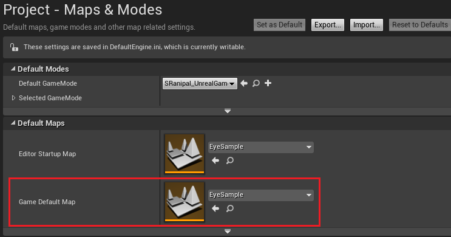
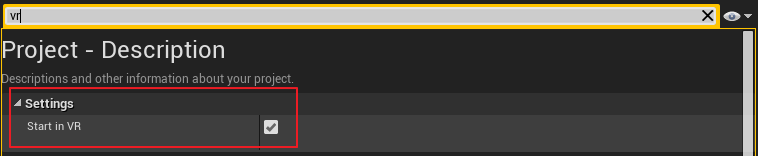
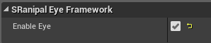
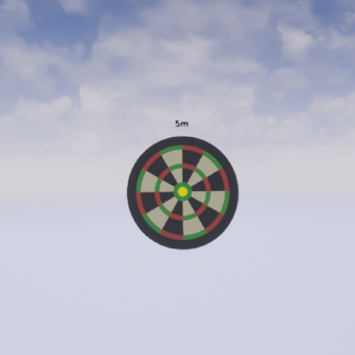
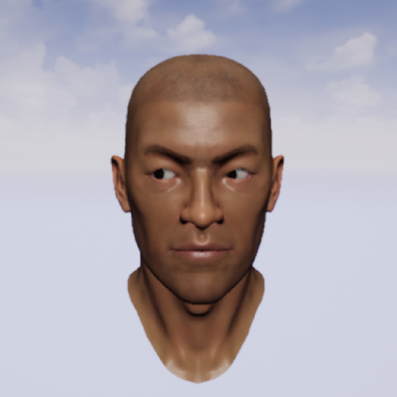

Prerequisites
The SRanipal SDK for Unreal can be implemented only when the SRanipal runtime has been setup. Use the following guideline to setup the SRanipal SDK — SRanipal_version\SRanipal_SDK_Guide.pdf.
Create a new project and add the SDK
- Open Unreal Engine and create a new C++ project.
- Unzip the plugins at
SRanipal_version\03_Unreal\Vive-SRanipal-Unreal-Plugin.zip
- Copy the folder
Plugins inside the folder you unzip above into your project.
- Restart the editor and enable SRanipal in Settings > Plugins.
Play the sample level
- In the Unreal content browser, you can find the sample level in:
SRanipal Content/Level/EyeSample.
- Ensure that all Requirements mentioned in
SRanipal_SDK_Guide.pdf are met and then click VR_Preview.
Package the sample app
- In Edit > Project Settings choose Maps & Modes
- Change the Game Default Map to EyeSample.

- In Edit > Project Settings choose Description (Or you can search vr).
- Enable Start in VR.

- Select File > Package Project > Windows > Windows (64-bit).
Enable SRanipal functionality in your Unreal project.
Enable the SRanipal Framework
- You can find the actor: SRanipal_Eye_Framework under:
SRanipal C++ Classes/SRanipal/Public
- Put the framework actor in your level.
- Toggle Enable Eye in the actor’s Details Panel to enable the eye-tracking feature of the SRanipal SDK.
- Explore the Eye features.

Eye Relative Features
Focus
To retrieve the vector point of the player’s eye focus, refer to the actors: SRanipal_EyeFocusSample in SRanipal C++ Classes/SRanipal/Public.

Control Avatar’s eyes
To reflect the player’s eye rotation and eye lid movement on an avatar, refer to the sample actor SRanipal_AvatarEyeSample in SRanipal C++ Classes/SRanipal/Public.
